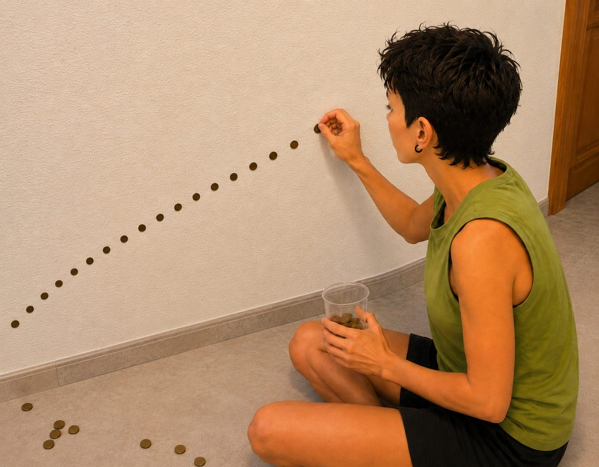

La moneda en la pared
El diseño oculto de la dispersión
Vivimos bajo la ilusión de que el recurso más preciado de nuestra era es el tiempo o el dinero. Sin embargo, los grandes arquitectos del control social operan a un nivel mucho más profundo y sutil: el secuestro de la atención. Cada notificación que parpadea en la pantalla, cada urgencia artificial fabricada por el algoritmo, cada conflicto prefabricado que inunda los informativos no busca meramente entretenernos, sino saquear nuestra moneda de curso legal más íntima: nuestra energía vital condensada en forma de foco mental.
La ecuación fundamental de la realidad es simple y despiadada: allí donde llevas tu atención, va tu energía, y allí donde va tu energía, se manifiesta tu realidad. Si aceptamos esta premisa, comprenderemos por qué el sistema contemporáneo está diseñado arquitectónicamente para mantenernos en un estado perpetuo de fragmentación.
La metáfora de los cien euros: el despilfarro sistémico
Imaginemos por un instante que poseemos un capital inicial de cien euros energéticos al empezar el día. Si caminamos por la existencia permitiendo que el entorno nos robe un euro por aquí —una discusión estéril en redes sociales—, otro por allá —una preocupación por el qué dirán—, y un goteo incesante de micro-estériles distracciones en el trabajo, al atardecer nos encontraremos con las arcas vacías.
Si en ese momento pretendemos materializar un proyecto vital que exige la inversión íntegra de noventa euros—un cambio de rumbo, una obra creativa profunda, un proceso de sanación—, el resultado será inevitablemente el fracaso. No porque carezcamos de valor o talento, sino porque nuestras arcas están esquilmadas. Hemos desperdiciado el capital en mil batallas ajenas que no nos correspondían.
Física y metafísicamente, esto se traduce en la diferencia fundamental entre una bombilla tradicional y un rayo láser. La bombilla dispersa cien vatios de energía en todas las direcciones; ilumina el desorden de la habitación, pero su luz es difusa, incapaz de cortar el acero ni de transformar la materia. El láser, en cambio, concentra esos mismos cien vatios en un único punto milimétrico. Esa coherencia absoluta es la que le otorga su poder transformador.
Cuando el sistema nos fragmenta, convierte nuestra mente en una bombilla rota que pierde energía por mil grietas. Cuando unificamos el foco, nos convertimos en un rayo láser capaz de atravesar cualquier densidad.
La arquitectura de la distracción y el control
El sistema de control no teme a una persona informada; teme profundamente a una persona coherente y centrada. Una mente dividida es una mente dócil. Al mantener al individuo perpetuamente atrapado en un bucle de estímulos reactivos —un incendio informativo por aquí, una llamada urgente por allá, un estímulo dopaminérgico constante—, se inhibe de forma sistemática su capacidad como creador de realidad.
Un organismo biológico sumergido en el estrés crónico y en la fragmentación de la atención activa mecanismos de supervivencia básicos. En ese estado de supervivencia, la consciencia se retrae; la capacidad de contemplación, discernimiento y manifestación soberana desaparece. Nos convertimos en meros consumidores y en reactores automáticos de estímulos diseñados en despachos ajenos.
El termómetro de la materia: el ejercicio de la moneda en la pared
Es aquí donde cobran sentido los ejercicios milenarios y las prácticas de maestría interior, como el clásico y aparentemente enigmático ejercicio de sostener una moneda contra la pared únicamente mediante el foco de la concentración. Para la mentalidad materialista mecanicista, esto es una imposibilidad física; para quien comprende las leyes de la energía, es un riguroso termómetro de la coherencia psíquica.
Cuando te sitúas frente a la pared con la moneda entre los dedos y buscas que esta quede adherida sin soporte físico mecánico, descubres de inmediato el estado real de tu mente. No puedes engañar al experimento. Si una parte de tu psique duda, si un rincón subconsciente rumia la lista de la compra o el correo electrónico pendiente, la moneda cae al suelo con estrépito.
¿Por qué ocurre esto? Porque la moneda no se sostiene por un fenómeno puramente físico, sino por la culminación de una voluntad unificada. Cuando logras silenciar el monólogo interno, cuando detienes la marea de pensamientos parásitos y congregas el cien por cien de tus «euros» energéticos en un único punto focal, se genera una tensión coherente —un campo de fuerza sutil pero inquebrantable— capaz de suspender la materia inerte.

La pared y la moneda se convierten así en el espejo perfecto de tu arquitectura interna. Si estás fragmentado, la materia te rechaza. Si estás unificado, el universo cede ante la densidad de tu presencia.
Sellando las fugas: el camino hacia la soberanía
Recuperar nuestra condición de creadores de realidad no requiere la adquisición de poderes extraordinarios, sino una rigurosa labor de higiene energética. Consiste en cerrar las vías de agua del barco de nuestra atención:
- La auditoría del foco: observar con radical honestidad a dónde van nuestros euros energéticos cada día y retirar el consentimiento a todo aquello que no sea recíproco ni esencial.
- La práctica del single-tasking: reeducar la mente para habitar una sola acción a la vez con presencia total, destruyendo el hábito moderno de la multitarea fragmentadora.
- El desapego de lo urgente ajeno: comprender que la inmensa mayoría de las llamadas de atención del entorno son señuelos diseñados para robar nuestro cambio suelto.
Cuando dominamos el arte de concentrar la energía, el mundo exterior deja de dictar nuestras circunstancias. La moneda en la pared deja de ser un milagro esotérico para convertirse en la prueba tangible de que hemos recuperado las riendas de nuestra soberanía mental. Ya no somos bombillas parpadeantes a merced de la corriente; somos el láser que esculpe su propia realidad.